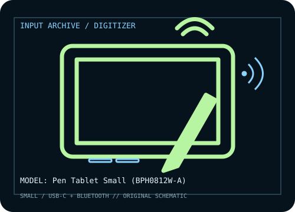

[ PEN TABLETS AND DIGITIZERS // IDENTIFIED COMPONENT ]
Xencelabs Pen Tablet Small
Compact professional pen tablet from Xencelabs, supplied with two battery-free pens; Quick Keys remote is a separate or bundle-dependent accessory.

MODEL IDENTIFICATION: Manufacturer model / identifier: Pen Tablet Small. Confirm the unit label, bundle contents, regional suffix, and revision against its product documentation before compatibility or repair work.
Model specifications
| Catalog subcategory | Pen tablets and digitizers |
|---|---|
| Exact model / SKU | Pen Tablet Small |
| Active area | 176.2 × 99.1 mm (6.93 × 3.90 in) active area. |
| Pressure and pen technology | 8,192 pressure levels; battery-free EMR pens with tilt support. |
| Resolution / report rate | 5,080 lpi digitizer resolution is specified; no report-rate figure is claimed here. |
| Interface | USB-C wired interface and Bluetooth wireless connection; Bluetooth availability and host pairing depend on the revision and bundle. |
| Driver, OS and compatibility | Xencelabs driver support is provided for Windows, macOS, and Linux; install the matching driver and verify Bluetooth support for the selected host OS. |
| Power | USB-C powers wired operation; Bluetooth operation uses the tablet’s internal rechargeable battery. The pens are battery-free. |
| Calibration and service notes | Use Xencelabs driver to select screen mapping, orientation, and pressure curve. Charge/pair for Bluetooth use, then verify alignment after changing monitor arrangement. |
Preservation and service notes
USB-C powers wired operation; Bluetooth operation uses the tablet’s internal rechargeable battery. The pens are battery-free. Use Xencelabs driver to select screen mapping, orientation, and pressure curve. Charge/pair for Bluetooth use, then verify alignment after changing monitor arrangement.
Record the as-found model label, accessories, host OS, driver/firmware version, calibration state, and test method. Published capability does not guarantee compatibility with a particular application or individual used unit.
Manufacturer sources
- Pen Tablet Small — XencelabsManufacturer product listing for the Small tablet and included pen options; bundle accessories vary.
- Drivers & support — XencelabsManufacturer software library for compatible Windows, macOS, and Linux drivers.
Manufacturer product and support pages can change. Save the applicable manual/driver release notes and verify the exact model and revision at setup.